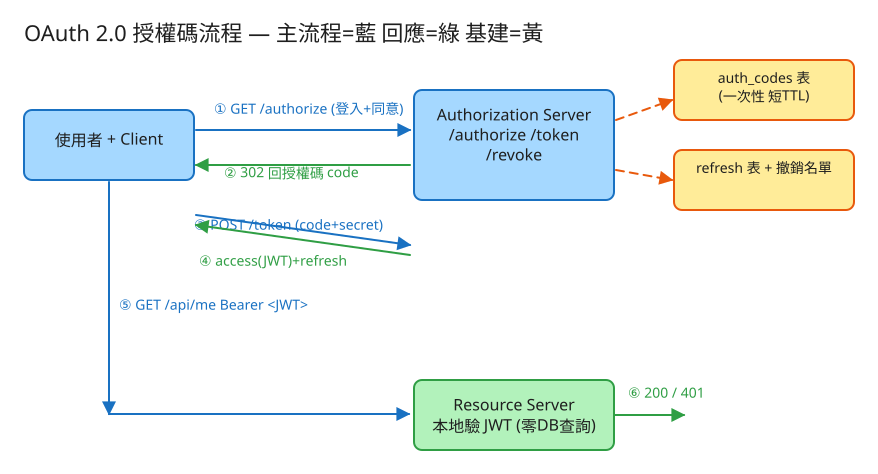

I 認證/安全 建議 48 分鐘 Design OAuth 2.0 / SSO
Single Sign-On（單一登入）：使用者在一個身分提供者（Identity Provider，如 Google）登入一次， 就能存取多個應用（Gmail、YouTube、第三方 App），不必各自註冊密碼。OAuth 2.0 是實作 SSO 與「授權委派」最主流的協定。
| 面向 | OAuth 2.0（授權 Authorization） | OIDC（認證 Authentication） |
|---|---|---|
| 回答的問題 | 「這個 App 能不能代表你存取某資源？」 | 「你是誰？」 |
| 產物 | access_token（一串可存取資源的票券） | id_token（描述使用者身分的 JWT） |
| 關係 | 基礎協定 | 建在 OAuth 2.0 之上的一層（加 id_token + userinfo） |
id_token 與 /userinfo。
code_verifier 取代固定 secret，防授權碼被攔截。另有 Refresh Token（嚴格說是 grant 而非「拿第一張票」的方式）：access_token 短命，過期後用 refresh_token 換新的，免得使用者重登。
| 指標 | 假設 | 推算 |
|---|---|---|
| 登入/發 token（寫） | 1 億使用者，每人每日 2 次 | 2 億/日 ≈ ~2.3k QPS（峰值 ×3 ≈ 7k） |
| token 驗證（讀） | 每次 API 呼叫都要驗，每人每日 200 次 | 200 億/日 ≈ ~230k 驗證 QPS（峰值 ≈ 70 萬） |
| refresh | access 15 分鐘過期 | 相對發 token 低一階，但仍需打 DB 查 refresh 表 |
| token 大小 | JWT ~700~900 bytes | 每請求多帶 ~1KB header |
# 1) 授權端點（瀏覽器轉導；使用者在此登入並同意）
GET /authorize?response_type=code
&client_id=demo-web
&redirect_uri=https://app/callback
&scope=openid%20profile%20email
&state=xyz # 防 CSRF，原樣帶回
&code_challenge=...&code_challenge_method=S256 # PKCE（公開 client）
→ 302 https://app/callback?code=<一次性授權碼>&state=xyz
# 2) Token 端點（後端對後端，帶 client_secret）
POST /token (application/x-www-form-urlencoded)
grant_type=authorization_code
&code=<授權碼>&redirect_uri=...&client_id=...&client_secret=...
→ 200 { "access_token":"", "refresh_token":"...",
"token_type":"Bearer", "expires_in":900, "scope":"..." }
# 2b) 用 refresh 換新 access
POST /token grant_type=refresh_token&refresh_token=...&client_id=...&client_secret=...
# 3) 撤銷（RFC 7009）
POST /revoke token= → 200（成功一律 200，不洩漏存在與否）
# 4) 受保護資源（Resource Server）
GET /api/me Authorization: Bearer
→ 200 { "sub":"user-1001", ... } | 401 WWW-Authenticate: Bearer error="invalid_token"
# 5)（OIDC）查使用者資訊 / 取公鑰
GET /userinfo Authorization: Bearer
GET /.well-known/jwks.json # 公鑰集合，供驗 RS256 簽章 clients -- client 註冊表
client_id VARCHAR PK
client_secret VARCHAR -- 應存「雜湊」而非明文
redirect_uris JSON -- 白名單，換 token 時嚴格比對
allowed_scopes JSON
auth_codes -- 一次性授權碼（極短 TTL，可放 Redis 設 60s 過期）
code VARCHAR PK
client_id, redirect_uri, scope, sub
expires_at TIMESTAMP
used BOOL -- 用過即 true；重放偵測
refresh_tokens -- 較長命，需持久化
token VARCHAR PK（或存雜湊）
client_id, sub, scope
expires_at TIMESTAMP
revoked_tokens -- 撤銷名單（黑名單）
token VARCHAR PK
revoked_at TIMESTAMP
# access_token 本身「不入庫」——它是無狀態 JWT，只靠簽章自我驗證。auth_codes 與 refresh_tokens 都建議存「雜湊值」而非原文，DB 外洩時才不會直接被冒用；
本 demo 為教學清晰存原文。授權碼表很適合放 Redis：天生短命、用 TTL 自動清。
✏️ 用 Excalidraw 開啟編輯（diagram.excalidraw） ┌────────┐ ①導向 /authorize ┌──────────────────────┐
│ 使用者 │ ───────────────────▶ │ Authorization Server │ (發 code / token、
│ +Client │ ◀─② 302 回 code───── │ /authorize /token │ 存 code 表+refresh 表)
└────────┘ │ /revoke (黃=基建) │
│ ③ POST /token(code+secret)└──────────┬───────────┘
│ ◀──────── ④ access_token(JWT)+refresh ┘
│
│ ⑤ GET /api/me Authorization: Bearer <JWT>
▼
┌──────────────────┐ 本地驗章(金鑰/JWKS)+比 exp ┌──────────┐
│ Resource Server │ ──────── 零 DB 查詢 ─────────▶ │ 放行/401 │
└──────────────────┘ └──────────┘授權碼會短暫出現在瀏覽器（redirect 的網址列、Referer、紀錄）。若它能重複換 token，攻擊者攔到一次就能無限換。
因此：用過即作廢，TTL 極短（30~60 秒）。更進一步——若偵測到同一 code 被換第二次，這是強烈攻擊訊號，
正規做法是連同這個 code 已發出的所有 token 一起撤銷。demo 的 exchangeCode() 用 used 旗標實作重放偵測。
手機 App / SPA 無法安全保管 client_secret。PKCE（Proof Key for Code Exchange）讓 client：
code_verifier，送出其雜湊 code_challenge = SHA256(verifier)。code_verifier；Auth Server 重算雜湊比對。就算授權碼被惡意 App 攔走，沒有 code_verifier 也換不到 token——用「動態一次性祕密」取代「固定 secret」。
JWT = base64url(header).base64url(payload).base64url(signature)。
Resource Server 拿到後：用金鑰重算簽章與 token 末段比對（防竄改）、檢查 exp（防過期重用）。
全程不查 DB，這是它能扛 70 萬驗證 QPS 的原因。demo 的 Jwt::verify() 用
hash_equals() 做常數時間比較防時序攻擊。
access_token 故意短命（15 分鐘）；過期後用 refresh_token 換新的，使用者無感。
安全強化：每次 refresh 就把舊 refresh 作廢、發一個新的。若某個已被換過的舊 refresh 又被拿來用，
代表它被偷且原使用者已換新——Auth Server 可據此撤銷整條 token 家族。demo 的 refresh() 即實作此輪替。
JWT 的優點（自我驗證、不查庫）正是它的痛點：簽出去就無法收回，直到 exp 自然過期。三種解法：
| 策略 | 做法 | 取捨 |
|---|---|---|
| 短期 access + 撤銷名單（主流） | access 設很短（5~15 分）；撤銷時把 refresh 加黑名單，access 靠自然過期 | 有最長 15 分鐘的「撤銷延遲窗口」，但驗證仍多數零查詢 |
| Token Introspection | 每次驗證都回問 Auth Server「這 token 還有效嗎」 | 可即時撤銷，但退化成有狀態、每請求一次查詢 → 失去 JWT 擴展性 |
| 版本號 / jti 黑名單快取 | Resource Server 查一個小型 Redis 黑名單（只存「被提早撤銷」的少數 jti） | 折衷：多數 token 零查詢，少數被撤的才命中黑名單 |
demo 用第一種：access 短命（ACCESS_TTL）、撤銷作用在 refresh（revoke() 寫入 revoked.json），
之後該 refresh 換不到新 access，整條鏈自然枯萎。
| 階段 | 瓶頸 | 對策 |
|---|---|---|
| 驗證量爆（70 萬 QPS） | 若走 introspection 會打爆 Auth Server | 無狀態 JWT 本地驗章，驗證可隨 Resource Server 無限水平擴展（無共享狀態） |
| 發 token / refresh | refresh 表查詢與寫入 | refresh 表分片（依 sub 雜湊）；授權碼放 Redis 自動過期 |
| 金鑰外洩風險 | 同一把簽章金鑰用太久 | 金鑰輪替 + JWKS：對外公開 /.well-known/jwks.json，token header 帶 kid 指定用哪把公鑰驗；舊金鑰留一段重疊期再下線 |
| 跨區延遲 | 全球使用者打單一 Auth Server | 多區域部署 Auth Server；公鑰可全球快取（驗章不需回源） |
| 撤銷一致性 | 黑名單跨區同步延遲 | 縮短 access TTL 降低窗口；黑名單用近即時複寫 |
state 做什麼？→ 防 CSRF，/authorize 帶出、callback 比對。為何別用 OAuth 當登入？→ access_token 不保證身分，要用 OIDC 的 id_token。token 放哪？→ SPA 放記憶體 / HttpOnly cookie，避免 localStorage 被 XSS 偷。本題 demo 著重授權流程與攻防邏輯（面試真正的考點），可實際用 PHP 內建伺服器跑起來：
src/Jwt.php HS256 風格 JWT：base64url 自寫、hash_hmac 簽 + 驗、exp 過期檢查、hash_equals 常數時間比對。src/AuthServer.php client 註冊表、/authorize 發一次性授權碼、/token 換 access+refresh（授權碼單次使用＋驗 secret/redirect）、refresh 輪替、/revoke 撤銷名單、Bearer 驗證。public/index.php 路由 + 一鍵示範頁：就地跑完 authorize→token→/api/me，並示範授權碼重放被擋、撤銷後 refresh 失效、竄改 token 驗章失敗三種攻防。# 啟動
cd demo
php -S localhost:8024 -t public
# 瀏覽器開 http://localhost:8024，首頁逐步列出完整流程與三種攻防結果json + PDO + hash 擴充、無 openssl，故 JWT 簽章以對稱式
hash_hmac('sha256', …, $secret, true)（HS256）取代正式 OIDC 常見的非對稱式 RS256；
base64url 自寫（strtr + rtrim '='）。
簽章/驗章/過期、授權碼一次性、redirect_uri 比對、refresh 輪替、撤銷名單、Bearer 驗證等授權邏輯皆為真實可執行，
差別只在金鑰是「共享密鑰」而非「公私鑰對」。要換 RS256 只需把 Jwt 內的 hash_hmac 換成 openssl_sign / openssl_verify，其餘流程不變。